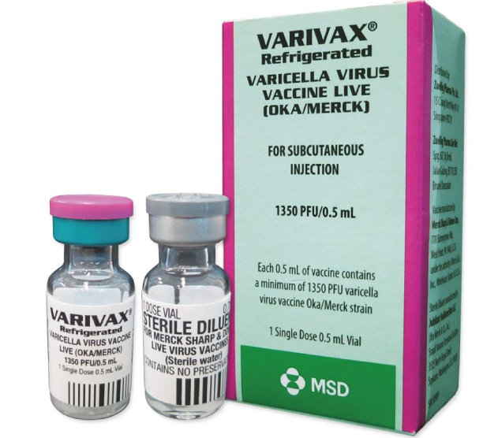
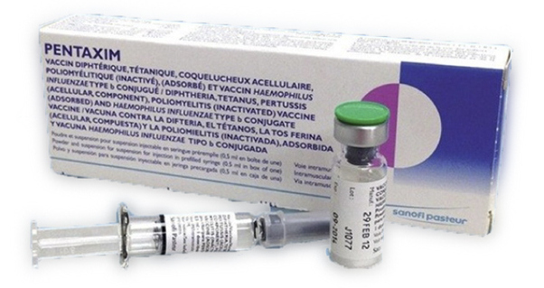
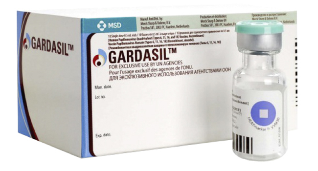

.png)
THÔNG TIN SẢN PHẨM VẮC XIN
VARIVAX – VẮC XIN PHÒNG THỦY ĐẬU

Nguồn: Mims.com
| Nguồn gốc | Merck Sharp and Dohme (Mỹ) |
| Chỉ định | Varivax là một vắc xin sống, giảm độc lực, được chỉ định phòng ngừa bệnh thủy đậu cho trẻ > 12 tháng tuổi và người lớn chưa có miễn dịch. |
| Lịch tiêm chủng | Liều duy nhất 0.5 ml được chỉ định khi trẻ đã được trên 1 năm tuổi. Người lớn và trẻ em trên 13 tuổi (chưa mắc thủy đậu lần nào) tiêm 2 mũi: – Mũi 1: là mũi tiêm lần đầu (0.5ml) – Mũi 2 : sau mũi 1 khoảng 4-8 tuần (0.5ml) |
| Đường tiêm | Tiêm dưới da |
| Chống chỉ định | – Mẫn cảm với bất kỳ thành phần nào của vắc xin, bao gồm cả: gelatin, neomycin. -Người đang mắc các bệnh bạch, loạn sản máu, các bệnh u lympho, hoặc các khối u ác tính ảnh hưởng đến hệ bạch huyết, tủy xương. -Người đang điều trị bằng các thuốc ức chế miễn dịch (bao gồm corticoid liều cao). Hoặc đang mắc bệnh suy giảm miễn dịch mắc phải (AIDS). -Người đã có miễn dịch do mắc phải. -Người đang mắc các bệnh lý tiến triển, sốt cao trên 38.00C. Tuy nhiên không có chống chỉ định cho trường hợp sốt nhẹ. -Người mắc bệnh lao thể hoạt động chưa được điều trị. -Phụ nữ có thai. |
| Thận trọng khi sử dụng | -Cũng như các vắc xin khác; cần có hộp chống sốc đầy đủ trước khi tiêm. – Chưa có bằng chứng về tính an toàn và hiệu quả của Varivax trên trẻ nhỏ và người trẻ tuổi đã bị nhiễm virus gây suy giảm miễn dịch ở người. -Chưa có nghiên cứu về tính an toàn của Varivax trên trẻ <12 tháng tuổi. -Người được tiêm chủng nên tránh tiếp xúc với các đối tượng có nguy cơ nhiễm bệnh như: người bị suy giảm miễn dịch, phụ nữ có thai nhưng chưa tiêm phòng thủy đậu; người chăm sóc trẻ mà chưa có miễn dịch do mắc phải hay do tiêm phòng… – Chưa có nghiên cứu về việc tác động của Varivax trên sự phát triển của thai kỳ vì vậy Phụ nữ phải tránh mang thai ít nhất 3 tháng sau khi tiêm. – Cũng chưa rõ vắc xin có bài tiết qua sữa mẹ hay không nên cần thận trọng khi sử dụng vắc xin cho bà mẹ đang cho con bú. |
| Tác dụng không mong muốn | Phản ứng tại chỗ tiêm: sưng, đau, khối tụ máu… Có thể sốt cao. Phát ban dạng thủy đậu tại vết tiêm hay toàn thân. |
| Tương tác thuốc | Hoãn tiêm vắc xin thủy đậu ít nhất 5 tháng sau khi truyền máu hoặc huyết tương và tiêm bất kỳ một immunoglobulin với Varicella zoster (VZIG). -Sau khi tiêm vắc xin thủy đậu trong vòng 2 tháng không được sử dụng immunoglobulin nào, kể cả VZIG, trừ khi việc tiêm này có lợi hơn tác dụng của vắc xin. -Trong vòng 6 tuần kể từ khi tiêm vắc xin không được dùng thuốc có chứa salicylate do có xảy ra hội chứng RYE trên bệnh nhân mắc thủy đậu tự nhiên được điều trị bằng salycilate. – Nếu không dùng đồng thời với vắc xin MMR II (sởi- quai bị- rubella) thì nên dùng cách nhau ít nhất 1 tháng. |
| Bảo quản | Vắc xin được bảo quản ở nhiệt độ từ 2-80C. |
LỊCH TIÊM CHỦNG

DANH MỤC VACCIN
.png)
ĐỊA CHỈ TIÊM PHÒNG
CHÚNG TÔI LÀ AI?
Là phụ nữ, chúng tôi có chung mối quan tâm tới bảo vệ sức khỏe cho gia đình mình
thông qua tiêm vắc xin phòng bệnh và mong muốn chia sẻ kiến thức về tiêm chủng, vắc xin
tới các phụ nữ khác và cả cộng đồng thông qua website này!


